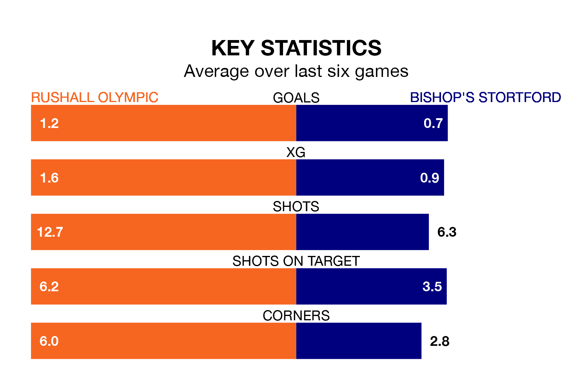

Rushall Olympic are heavy favourites to keep all three points at home in Tuesday's late kick-off against Bishop's Stortford.
Rushall Olympic, who sit 20th in the National League North with 43 games played, are priced at 1.1 to seal victory at Dales Lane.
Sitting four places and 30 points behind them in the table, Bishop's Stortford are 13.0 to win with *Betting Company*, while the draw is at 7.0.
Rushall Olympic are in mixed form in the National League North, with three wins and three losses from their last six games.
With a win and five losses over that period, Bishop's Stortford's form is much worse – they have taken three points from 18, compared to the hosts' nine.
With 35 goals in 43 games so far this season, the away team are the league's lowest scorers with 0.8 goals per game. And they are conceding more than average, letting in 106 goals at a rate of 2.5 per game.
Rushall Olympic, meanwhile, are average scorers, with 1.3 goals per game. They have conceded 1.6 goals per game.
Rushall Olympic's last match was on Saturday, a 2-1 win against Blyth Spartans.
Bishop's Stortford lost 7-0 against South Shields last time out, also on Saturday.
Updated: 14:47 (UTC), 09/04/24